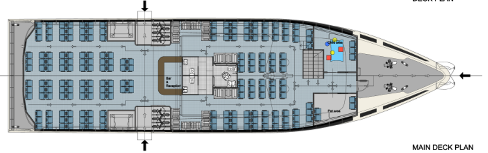
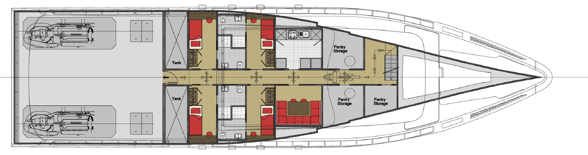
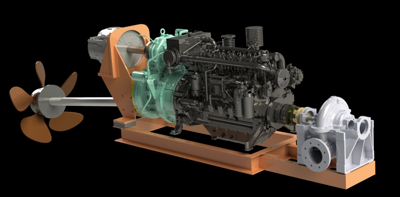

介绍PMASV38 ECO系列
通用能源推出Power Master ASV38 (PMASV38)，这是我们ECO系列混合动力渡轮的最新成员。这种先进船舶代表了可持续客运的突破，结合了传统渡轮运营的可靠性与混合动力推进技术的环境优势。
PMASV38设计用于服务沿海和岛屿间航线，在环境保护至关重要的同时，保持乘客和运营者依赖的服务可靠性。
船舶规格
总长
38米
型宽
10.5米
吃水
2.2米
乘客容量
350名乘客
车辆容量
25辆汽车或4辆巴士
电力功率
2 x 250kW电动机
柴油备用
2 x 350kW柴油发动机
服务航速
混合动力16节/电力14节

混合动力推进系统
PMASV38采用GEES先进的混合动力推进系统，为渡轮运营优化：
双模式运营
根据运营需求在纯电和混合模式之间无缝切换
高容量电池
1,200 kWh锂离子电池系统，延长电力运营时间
高效发电机
变速柴油发电机，为电池充电和峰值功率优化
智能控制
先进的能源管理系统，实现最佳效率和乘客舒适度
乘客设施与舒适度
PMASV38优先考虑乘客舒适度和安全，配备现代化设施和周全设计：
- 宽敞乘客区： 气候控制座位区，带全景窗户供观光
- 无障碍功能： 完全无障碍合规，配备电梯和轮椅专用空间
- 安静运营： 电力推进提供耳语般安静的巡航，提升乘客舒适度
- 安全系统： 先进的灭火、紧急疏散系统和救生设备
- 现代化设施： 清洁卫生间、餐饮服务区和Wi-Fi连接
- 天气防护： 封闭式乘客区，带室外观景甲板
车辆甲板和货物处理
PMASV38配备灵活的车辆甲板，设计用于高效装载和乘客便利：
高效车辆进出
直通式设计，配备首尾跳板，实现快速装卸
适应性车辆空间
可配置甲板空间，容纳各种车辆类型和货物组合
车辆固定系统
先进的车辆约束系统，确保所有天气条件下的安全
先进空气管理
复杂通风系统，维持封闭车辆区域的空气质量

环境性能
与传统柴油渡轮相比，PMASV38提供卓越的环境性能：
减排
降低60%二氧化碳排放
燃油效率
减少45%燃油消耗
降噪
降低80%噪音水平
电力航程
4小时连续运行
零排放区
完全合规能力
空气质量影响
最小颗粒物排放

运营灵活性
PMASV38混合系统为渡轮运营者提供无与伦比的运营灵活性：
纯电运营
安静、零排放运营，适合敏感海洋区域和港口
高性能模式
结合电力和柴油动力，实现最大速度和班次可靠性
扩展航程能力
柴油备用确保无论充电基础设施如何，服务连续性
天气适应性
混合系统根据海况和乘客负载调整功率输出
航线应用和市场适用性
PMASV38设计用于全球市场多样化的渡轮应用：
- 岛屿连接： 非常适合群岛地区的岛屿间服务
- 沿海航线： 在短至中程沿海渡轮航线上高效运营
- 河流穿越： 适合有定期班次的主要河流穿越
- 旅游服务： 优先环境保护的风景航线
- 城市交通： 作为水上巴士与城市交通网络集成
- 偏远地区： 服务基础设施有限的偏远社区

运营者的经济效益
PMASV38为渡轮运营者提供引人注目的经济优势：
减少燃料支出
通过混合运营和电力效率显著降低燃料成本
降低维护成本
与柴油系统相比，电力推进组件需要最少的维护
法规合规
为当前和未来的环境法规及排放限制做好准备
增强乘客体验
安静、舒适的运营吸引乘客并支持溢价定价
安全与认证
PMASV38满足或超过所有适用的海事安全和环境标准：
- IMO合规： 完全符合国际海事组织安全标准
- 船级社： 获得主要船级社认证，包括CCS和DNV
- SOLAS要求： 满足客船国际海上人命安全公约要求
- MARPOL合规： 超过海洋污染预防要求
- 国家标准： 符合全球各地海事安全法规
- 应急系统： 全面的应急响应和疏散系统
渡轮运输的未来
PMASV38代表了GEES对渡轮运输未来的愿景 - 结合运营效率、乘客舒适度和环境责任。随着全球沿海和岛屿社区寻求可持续交通解决方案，ECO系列提供了满足当前需求和未来要求的成熟技术。
通过从设计到运营生命周期的全面支持，GEES确保PMASV38在未来多年提供可靠、高效和可持续的渡轮服务。